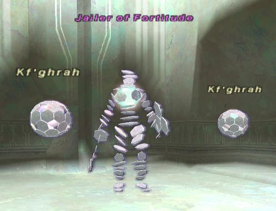

Level 75 reference · Zenith rules
|
Job: Notorious Monster |
 Image source |


| Zone | Level | Drops | Steal | Spawns |
Notes |
|---|---|---|---|---|---|
|
2 |
|||||
|
HP = Detects Low HP; M = Detects Magic; Sc = Follows by Scent; T(S) = True-sight; T(H) = True-hearing JA = Detects job abilities; WS = Detects weaponskills; Z(D) = Asleep in Daytime; Z(N) = Asleep at Nighttime | |||||
Notes:
- 2 assist the Jailer of Fortitude. When they are alive, the Jailer has the ability to reflect (more specifically mimic) any spells cast against it back on the casters.
- They pop in Ball form, but can turn into the Bird form or Spider form. When one changes, usually the other changes within a short period of time to match the first one.
- One Kf'ghrah casts only Light-element spells and the other Kf'ghrah casts only Dark-element spells.
- Susceptible to Gravity and Shadowbind
- "Call for Help" will not work on them.
Adapted from Eden Wiki: Kf'ghrah · Contributors and history · CC BY-SA 4.0. Revision 5158. Layout, links and optional background text adapted for Zenith.